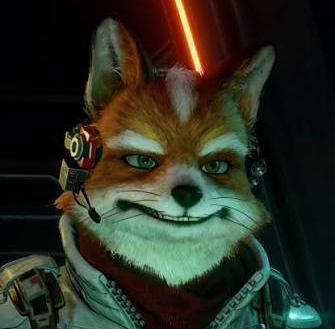
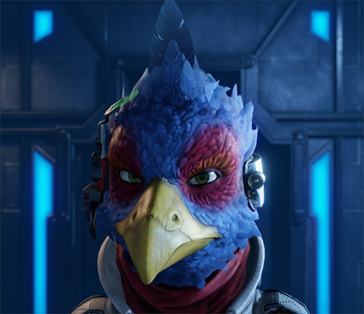
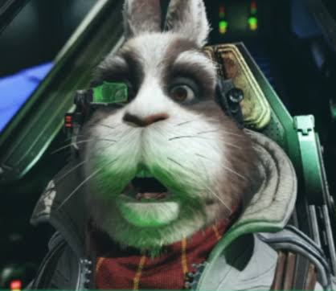
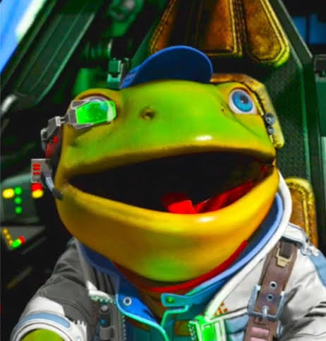

フォックス・マクラウド FOX McCLOUD
消息を絶った英雄ジェームズ・マクラウドの一人息子にして、父の部隊を受け継いだ若きリーダー。士官学校を主席目前で自主退学し、傭兵の道を選んだ。操縦技術は既に「父を超えた」と評する者も多い。

第2次ライラットウォーズに関わる主要人物のプロファイル記録。友軍・敵性・民間を問わず、戦術上参照価値のある人物を収録している。各記録の詳細は「▶ プロファイルを開く」から閲覧できる。一部の経歴には検閲が含まれる。
消息を絶った英雄ジェームズ・マクラウドの一人息子にして、父の部隊を受け継いだ若きリーダー。士官学校を主席目前で自主退学し、傭兵の道を選んだ。操縦技術は既に「父を超えた」と評する者も多い。

元・宇宙暴走族「フリー・アズ・ア・バード」の頭を張った荒くれ者にして、隊随一の操縦センスを持つエースパイロット。口は悪く協調性は皆無だが、その翼を頼らずに済んだ作戦は一度もない。

初代スターフォックスの生き残りにしてジェームズの無二の親友。ベノム偵察作戦から単身生還し、裏切りの真実とともにフォックスを育て上げた。隊の頭脳であり、良心であり続けている。

SD社主任設計技師ベルツィーノ・トードの息子で、フォックスの士官学校からの親友。操縦の腕はさておき、敵兵器のシールド解析と整備の腕は星系屈指。叔父グリッピーの惑星の警備も個人受注している。

グレートフォックスの操縦と管理を単独で担う自立型AIロボ。ジェームズの時代から艦と共にあり、ピグマとスリッピー二代の改造で旧型ながら最新型を超える性能を見せる。カタリナの奇跡の補給投下は誰の指示でもなく彼自身の判断であった。隊員たちが「うちの一番の働き者」と呼ぶ実質5人目の隊員。
プロスペロー航空自警団の整備士にしてパイロット。量産型アーウィンを極限まで速くした赤い改造機「ゼラニューム」を駆り、「母なる星を守るために来ました」の一言でグレートフォックスに居座った押しかけ整備士。頭の赤いリボンが目印で、身元照会は今も「保留」のままである。
カタリナ出身のオオヤマネコ系バステトイドの女性。「防衛より攻撃に向いている」と公言する元プロスペロー航空自警団の迎撃パイロットで、フェイ・スパニエルの後を追って押しかけスターフォックス第2隊に加わった。火器強化型の青い改造機「ブルーベル」を駆る。証明写真では小柄に写るが実物は190を超える大柄で、軍用ジャケット姿で男性に間違われるのが悩み。
CDF最精鋭のエースから民間へ転じ、雇われ遊撃隊スターフォックスを創設した伝説の傭兵。ベノム偵察作戦で僚機の裏切りに遭い消息不明。その前半生の記録には、今も厚い検閲がかかっている。
星系全域の防衛作戦を統括するCDFの最高指揮官。かつてアンドルフの助命とジェームズの減刑、二つの temperance を選んだ男であり、この戦争の因果の多くは彼の決断に遡る。それを誰より知るのは本人である。
カタリナ前線基地の第7飛行隊を率いる若き隊長で、フォックスの士官学校時代の親友。「カタリナの奇跡」の立役者の一人であり、その部隊「バーナード」「ドーベル」の名は帝国軍にも知れ渡る。
本土防衛を司るCDF第1飛行隊「レトリーバー隊」の隊長。士官学校本校を首席で出て以来一度も負けたことのない神童で「ペパーの再来」と呼ばれる次期CDF長官の最有力候補。ただし中身は世間知らずのお坊ちゃまであり、ビル・グレイへの対抗心が人物像の鍍金を剥がしつつある。
ジョージ・バロンに常に付き従う寡黙なメイド。ベンタブラックと形容される全身の黒さから「ジョージの影に目が浮いている」と言われ、彼の鍍金が剥がれないよう目を光らせる姉のような存在。ゴールド・クレストの僚機シャドウ・ブレードの操縦者でもある。
カタリナ基地防衛隊に配属されたばかりの新任軍曹。開拓民の家に生まれ、故郷の空を守るために軍門を叩いた。目下、参謀本部から臨時付与された閲覧権限で、部隊の仲間とともに軍事情報プロファイルを読み込んでいる。
昇進を4度断った「計器の申し子」。小惑星帯の偵察中、銀色の隕石の卵と巨大な怪鳥「シルバーフェニックス」に遭遇し、交信を最後に消息を絶った。残骸は見つかっておらず、戦死認定は今も保留のままである。
公認撃墜64機、戦時公報の顔にもなった「笑うクマの撃墜王」。諜報部へ転属後、宇宙を泳ぐクジラ「スペースホエール」を追って消息を絶った。彼のサーモン休暇の申請書は、今も毎年秋に仲間の手で提出され続けている。
異例の若さと速さで少佐まで昇進した共和国軍の天才指揮官。「コーネリアの白い刃」ヴォーパル隊を自ら率い、最小の犠牲で敵に最大の痛手を与える冷徹な用兵で、友軍からすら畏怖される。帝国軍の奇襲計画発覚を受け、現在カタリナへ緊急展開中。
敵味方の双方から「魔術師」と呼ばれた共和国軍の天才軍師。ケローン大提督の唯一の弟子にして、その頭脳を読める唯一の男であった。カタリナの田舎町から昇進を断り続けたまま星系の英雄となり、戦場ではなく街頭の凶刃に倒れた。その国葬はライラット史上例のない規模で営まれている。
セクターαの日食作戦を考案し、魔術師ウェンリーの手腕を最もよく再現した士官の一人と評される。功績により大佐へ昇進し、タイタニアの秘密拠点で軍の機密情報を管理する立場へ抜擢された。礼節を重んじ気さくで信頼が篤いが、目元だけは笑っていないと言う者もいる。趣味はヒヤシンスの水耕栽培とシーモンキーの育成。
コーネリアとプロスペローの治安を担う警察組織CPVの現署長。第2攻殻機動部隊の一隊員から叩き上げた敏腕で数々の難事件を解決に導いた。宇宙歴3987年のアンドルフ裁判では警察の長として最高裁へ7度の異議を申し立て全て却下されている。戦時下の現在は民間人の避難と警護の指揮に忙殺されている。
共和国軍への協力で名を馳せる遊撃隊「ワイルド・ブルー・ストライカー」を率いる青年パイロット。ニャン・ウェンリーが軍の外に探し求めた次世代の遊撃隊の一つとしてコーネリア本土防衛戦で実戦配備され、以後は正規軍の手が回らない戦域を専門に請け負ってきた。大海原の波頭や砂漠の尾根、洞窟の奥といった地形の際を縫う超低空飛行を十八番とし、管制の用意した航路をまず飛ばないことで管制官泣かせとしても知られる。本人いわく「道は空の数だけある」。
隊の中核は「ブルーボンバーズ」と呼ばれる4人のパイロットである。固い絆で結ばれたこの4機編隊は損耗率の高い遊撃稼業にあって一人の欠員も出しておらず、コーネリア本土防衛戦で弾切れに陥りながら敵残骸から武装を剥ぎ取って戦闘を続けた逸話の主もボウイ本人とされる。姓のストレイは「野良」を意味するが、その飛び方は群れを守る牧羊犬そのものであると僚機は評する。窮地の民間船を見捨てた記録は一度もない。
コーネリア連合共和国の政治を司る「三官」の一角、元老院を務める政治アドバイザーの総称。連合の建国にかかわった5つの主要国から一人ずつ選出されており、ライラット星系の平和のために経験と英知を共有している。評議会が「決める」機関であるのに対し、元老院は「過ちを覚えている」機関である──建国世代の記憶を政治に残すことこそが、その最大の役割とされる。
現在の構成員は以下の5名。
── コーディリア代表（旧コーディリア王国）：アームストロング老
── グランベル代表（旧グランベル国）：ケルベス老
── ローザリンド代表：ニルジャゼル老
── アクアス代表（旧タッドー共和国）：トーマス老
── サルジーナヤ代表（旧サルジーナヤ連邦）：シキ老
5人は常に仮面と長衣で全身を覆っており、公の場で素顔や素性が明かされたことは一度もない。ケルベス老とニルジャゼル老は武断的な強硬論を、トーマス老とシキ老は融和的な慎重論を取ることで知られ、アームストロング老は常に星系全体の未来を第一に置いて裁定を下すという。ただしシキ老だけは単独で動くことが多く、その真意は他の4人にも見えづらいと評される。
【機密】── 各構成員の素性・経歴、およびFCH-119関連の照合記録は、機密レベル《アポカリュプシス》へ移管された。閲覧には専用アーカイブでの認証が必要である。
星系随一の天才科学者にして、コーネリア科学省長官から流刑囚へ、そして帝国の皇帝へと転じた男。その頭脳は今も星系最高であり、それこそが最大の脅威である。全ての始まりは、一件の爆発事故だった。
「植物学・作物学の父」と称され、オベロン計画の基礎とプロスペローの農業革命に名を残す高名な博士。だがその前歴は不気味なほど丁寧に塗りつぶされており、公式記録の上ではオベロンⅡの廃棄と共に世を去ったことになっている。実像は個人ファイルの封印区画を参照のこと。
ベノム帝国軍の頂点に立つ最高司令官にして、最終防衛ラインAREA6の管理主任。帝国史上最強の司令官と謳われ、敵味方の双方から「ケローン大提督」の名で呼ばれる。スターブレード艦隊への強い危機意識で知られ、帝国の絶対防衛圏構想はこの男の設計によるところが大きいとされる。
帝国が水面下で軍備を進めていた時代からの最古参であり、独立星系連合の崩壊後に放棄されていた衛星に眠る価値を見抜き、自立戦闘ステーションボルスとして再生させた張本人でもある。機密記録は、建国宣言前のsectorτにおけるプロトボルス大改修とバイオニュークリアエネルギー炉の試験、その暴走に至るサイレント・ナイトメア事件の主導者として本人を名指ししている。詳細は防衛衛星ボルスの項を参照のこと。
帝国に雇われた精鋭傭兵部隊スターウルフを率いる隻眼の狼。スターフォックスへの異常な執着で知られるが、その戦いぶりには奇妙な「作法」があり、単なる殺し屋と呼ぶことを嫌う者も多い。
静かな口調と残忍な戦法のギャップで恐れられる、スターウルフの二番機。かつては裏社会の「掃除屋」だったとされ、その経歴の大半は闇の中。ウルフにだけは奇妙な忠誠を示す。
初代スターフォックスの創設メンバーにして、ベノム偵察作戦でジェームズを帝国に売った裏切り者。若き日のジェームズと組んだ最古の相棒が、最悪の敵になった。動機は今も金だけだと、本人は笑う。
皇帝アンドルフの甥という血筋だけでスターウルフに座る、隊の問題児。腕は隊で最も未熟だが、伯父への心酔は本物であり、それゆえに一番危うい。本人だけが自分を次期皇帝と信じている。
毎月月初、最前線に現れては撃墜されていく帝国の名物搭乗員。実力は並以下だが皇帝への忠誠は本物で、何度爆散しても絆創膏一つで帰ってくる。クローン説まで流れたその正体は、ただ「異常に運がいい」だけの男である。
「腕なし」と蔑まれたフォルトナ生まれの蛇系の少年は、全身サイボーグ化を経て六本の腕を持つ星系最恐の将軍となった。全盛期のZ・Z・ペパーと7度渡り合い決着つかず。戦犯法廷でコフィンスーツ判決を受けた直後、法廷内で自爆して果てた。
黒い薔薇を紋章に掲げる伊達男の傭兵パイロット。負傷離脱したアンドリューの代役として編入され、契約満了後もなぜか隊に居着いている。軽薄な口説き文句とは裏腹に、その速射の腕は星系でも指折りである。
固有の大艦隊を持たない通商連合にあって、各社の企業警備艦隊を束ねて一つの防衛網として運用できる唯一の人物。旧ボルツ公国軍最後の艦隊将官であり、理事会が「将軍」の階級呼称を認めた現役ではただ一人の例外である。利益を法とする商人の星系で「客の命」を帳簿の一番上に置き続ける男であり、敵味方の別なく「連合の良心」と呼ばれる。
ゾネス陥落時には理事会の沈黙を尻目に難民船団を独断で収容し、「積荷より客だ。降ろしたければ私を降ろせ」の一言を連合圏の語り草にした。防勢一辺倒の用兵は「動かぬ甲羅」の異名を持ち、その防衛線が破られた記録は公国時代を含めて存在しない。現在はガロウ連邦を巡る三大勢力の情報連携で連合側代表を務めている。
鎖国国家ガロウ連邦の頂点に立つとされる人物。フィチナの古老の証言と傍受通信の断片から同定された、CDFが「提督」の呼称で管理する連邦軍の総帥である。実質的に王族と同じ役割を果たす中央政権の頂点にあり、独立星系連合が残した兵器を接収して着々と軍事力を高めていると解析されている。連邦の国力は二大勢力に遠く及ばないものの、ベノム帝国の出現により大規模な攻勢の機を失い、現在は様子見に徹しているというのが情報部の見立てである。悲劇の経緯を背負うアンドルフと異なり、その行動原理に同情の余地を見出した分析官はまだいない。
近年の連邦の急速な軍拡は「軍事顧問」と呼ばれる正体不明の人物の存在抜きには説明できないとされる。この顧問が作り出す無人兵器群は連邦の主力になりつつあり、その設計思想は星系の既知のどの工廠の系譜とも一致しない。顧問の正体は約30年前にエクストリーム・ゾディアックに討伐されたはずのアルペジオ三男ラタと照合されている。ラタは都市修繕ボットと融合したサイボーグの科学者として生存しており、十数年の潜伏を経てグリムクロウと合流した。以後18年ほどの歳月で、辺境の鎖国国家は無人兵器を柱とする現在の軍事国家へ作り替えられている。二人が連れ立って足つぼマッサージ店に現れるという潜入報告が複数残されており、この二人の関係を単なる主従と見る分析官はいない。
セティボスの重力航路問題を解いた天才数学者イワッチーに始まる技術者一族。SD社主任設計技師の兄ベルツィーノ、惑星グリッピアを丸ごと買った弟グリッピー、そしてスターフォックスのスリッピーへと「歯車を握って生まれる血」は続いている。
Gディフューザーシステムの発明者にして、アーウィンの生みの親。技師のまま社長になった変わり者で、今も週の半分は設計室にいる。「操縦できない機体はない。乗り手が育っていないだけだ」が持論。
星系中を根城にする凄腕の運び屋。ファルコとは飛行族「フリー・アズ・ア・バード」時代からの腐れ縁で、呼ばれていない戦場に現れては貸しを一つ増やして消える。族仕込みの航路読みは「風読み」の異名で知られ、所属を聞かれれば「風」と答える。
パペトゥーンの酒場の看板娘としてジェームズと出会い、フォックスを産み育てた女性。その死は「車両事故」として処理されているが、当時の捜査資料は現在も封印されたままである。
星系最大の旅客航宙財閥フェニックス家の一人娘にして、スペース・ダイナミクス社でアーウィンの試作機を最初に飛ばすチーフテストパイロット。フォックスの亡き母ヴィクシーに容姿と雰囲気だけがよく似ており、拉致未遂と試作機強奪の二件を経て現在はCDFの保護監視下にある。
フォルトナの神殿最奥で、水晶状の鉱石に閉じ込められた状態のまま発見された青い体毛の女性。本名は不明で、「クリスタル」は発見状況から付けられた仮称。回収された武器「万能杖」の解析結果が待たれる。
フォルトナを統治するアソーカ族の王子。戦火の年に唯一残された卵から生まれ、フォルトナ戦役ではフォックス・マクラウドと共に戦い抜いた。星の声を聞く稀有な資質を持ち、クリスタル・スタッフを預かる小さな毒舌家。
血族ではなく実力のみで族長に認められた、サウリアン唯一の異例の存在。怪力と精密動作、多言語の識字、統率力を兼ね備え、帝国が最も欲しがり共和国が最も警戒する男である。本人ですら自身の真名を知らない。
竜の一族を率い、数百年にわたりフォルトナの部族を恐怖で束ねた圧制者。一族最後の男性とみられる長命種であり、死病に朽ちかけた体を帝国の手で機械へ置き換えて復活したとされる。帝国に与しながら、その意図だけが誰にも読めない。
禁断の星の採掘施設で、数百年前に受けた最後の命令「掘削と輸送」を今も守り続ける大型採掘マシン。長い独学の果てに対話と商売を覚え、現在はタイタニアの地形を知り尽くした情報屋を営む。値切った者は、砂漠の遺構の仲間入りとなる。
魔人飴を通行料に、星系のあらゆる場所へ物質転移させてくれる岩の魔人。人見知りで口が悪く寝起きは最悪だが、決めるところでは決めてくる。昼寝は百年単位。正体は本人いわく「寝すぎて忘れた」。
左腕のバスターと牙の毒で知られる殺し屋横丁の番付首位。客が誰であろうと金さえ支払われれば引き受け、請けた仕事を落とした記録は一件もない。現在はビリー・シールズ大佐を標的に活動中との情報がある。
星系最小の体格で星系最大級の犯罪帝国を統べるドン「ビッグ・ボス」と、その血族シンジケート。廃墟の都市群を一枚に縫い合わせて都市惑星キューを完成させた一族であり、関与が疑われた事件は数知れないが立件例はほとんどない。マノウォーの碑文の持ち主にして解読率6%の保持者でもある。
星系最強の情報要塞を攻めたクラッカーが司法取引でその鍵を預けられ、覚えやすさだけで鍵を作った。CDF史上最大の情報漏洩の原因を作った張本人として懲役250年の判決を受け、執行猶予中に逃走。本記録は再犯時の追跡マーカーを兼ねる。
エラダードの生産都市を管理するHVCシリーズのうち、当機だけが人型ロボットに搭載された用途不明の9号機。製作途中のまま帝国商艦に付いて行って行方をくらまし、現在はセクターτの廃墟で通りがかりの船へ見境なく攻撃を加えているという。人物か兵器かの登録区分は最後まで紛糾した。
「こちらカイマン 異常ないっすよ～」で知られる帝国最強艦隊の新人哨戒兵。AI任せの雑な哨戒の一方で海上要塞シーレシアの操縦やノラ・ラゴス包囲網の指揮でも前線に現れる。グランガパイロットと同じ「定期的に現れる襲撃者」の区分だが練度は比較にならない。色違いと思って油断してはならない。